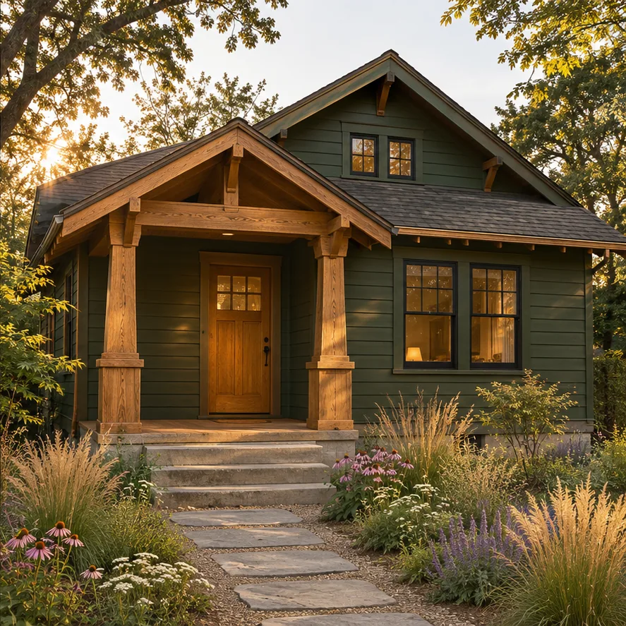
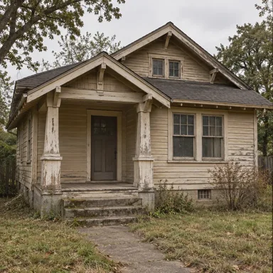
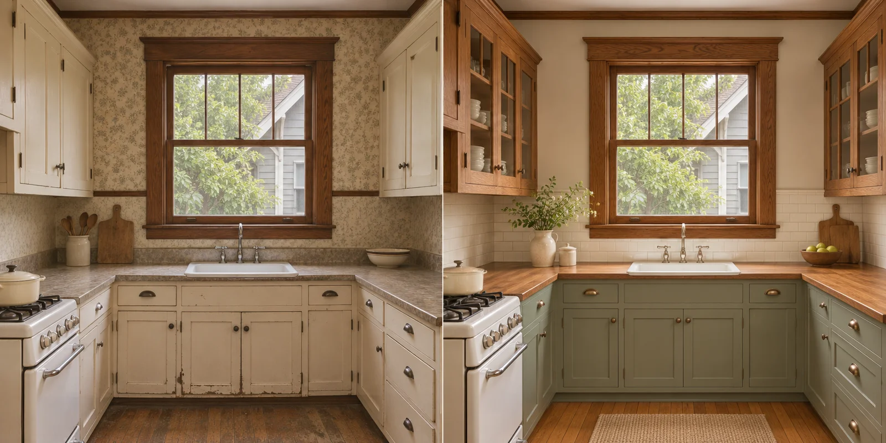

Property renovation
Old houses,
reimagined.
AM buys older houses, gives them a bold renovation, and brings them back to market for sale or rent.
Follow the bungalow study ↓

After concept

Before concept
AI-generated exterior study · Imagined property and renovation.
About AM
Buy. Rework.
Sell or rent.
- Acquire
- In this imagined bungalow, weathered siding makes the porch framing worth inspecting before deciding whether to buy.
- Renovate
- The kitchen study keeps the window and sink in place. New cabinetry gives the room more usable storage.
- Return to market
- For this bungalow, AM would compare likely sale proceeds with rent after upkeep and vacancy before choosing a path.
Bungalow kitchen concept
Keep the window.
Rework the room.
Keep the deep sash window and the sink beneath it. Change what surrounds them, and the whole room feels different.

Before concept
After concept
↔
Drag the divider or use the arrow keys.
AI-generated concepts. Both views depict an imagined home.
- Oak
- Warmth across the worktop
- Sage
- Color on the lower cabinets
- Ivory tile
- A lighter wall behind the sink
Buying & renting
The next move.
Buy a renovated home.
Ask about the area, layout and renovation details that matter to you.
Plan a buyer inquiry ↗
Rent a renewed home.
Prepare questions about a potential rental, its features and your preferred move-in date.
Plan a renter inquiry ↗
Sale and rental availability: awaiting verified listings.
Seller, buyer & renter inquiries
Talk property
with AM.
Have an older house to sell or a renewed home in mind? Pick a topic for a short checklist.
Send a private inquiry to AM.
Ask whether AM covers your area.
Open the inquiry form ↗
Choose a topic to see which details to prepare.